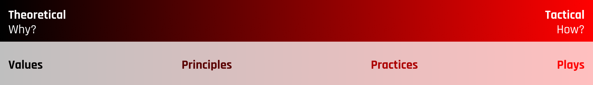

Values, Principles, Practices and Plays
Companies will define these terms differently, at Rise8, we want to align around a common definition to better communicate how we work and why we care about how we work as an organization.

Although not an exact science, we believe it’s important to recognize that there is a gradient between why and how we work, and that as a company, there is value in coming together to reflect and iterate on how we deliver for our customers.
Our Rise8 definitions are as follows - going from the most theoretical to the most tactical.
Values
The fundamental things we consider important and desirable as an organization. They are the foundation on which principles, practices and plays are built upon. Values are the most theoretical, least tactical of the 4 levels.
Examples of values: quality, short feedback loops, user feedback
Principles
These are the beliefs or axioms that guide us and help us make decisions, shape behavior and our actions. They are a little more tactical than values as they give some guidance around how to work.
Examples of principles: accessible to everyone, outcomes or bust, automate repeatable processes, deliver software early and often
Practices
These are the methods, techniques, or routines used to implement principles or achieve specific goals. They are tangible strategies which allow you to enact your principles with some level of consistency. Practices are a bit more theoretical than the highly-tactical plays. Risers should at least be aligned on practices where there may be some divergence between how to tactically implement different plays.
Examples of practices: user research, outcome oriented roadmapping, balanced teams, automated testing
Plays
The specific actions or tactics deployed within a particular context or situation. These are more formulaic and therefore are usually the most likely to be changed or altered depending on the context. Plays are about making calculated moves to achieve short-term objectives or navigate specific situational challenges. A play is a type of repeatable recipe that can be taught to navigate a situation.
Examples of plays: ping-pong pairing, 3-column retrospective, think-aloud protocol usability test, mocking an API call under test, 2x2 matrix prioritization workshop
Linking Values, Principles, Practices, and Plays Together
You can move “up the chain” to the more theoretical by asking, “why?” and “down the chain” toward the tactical by asking, “how?” The relationships between values, principles, practices and plays can be complex and intertwined. For example, there may be several plays for a particular practice, and a play may connect back to multiple other practices. You may find that on the gradient there are higher level practices like “User Research” as well as more tactical practices such as surveying or user interviewing.
An Example
Value: Software Quality
Principle: Every line of production code has test coverage
Practice: Test Driven Development (TDD)
Play: Red, Green, Refactor Method